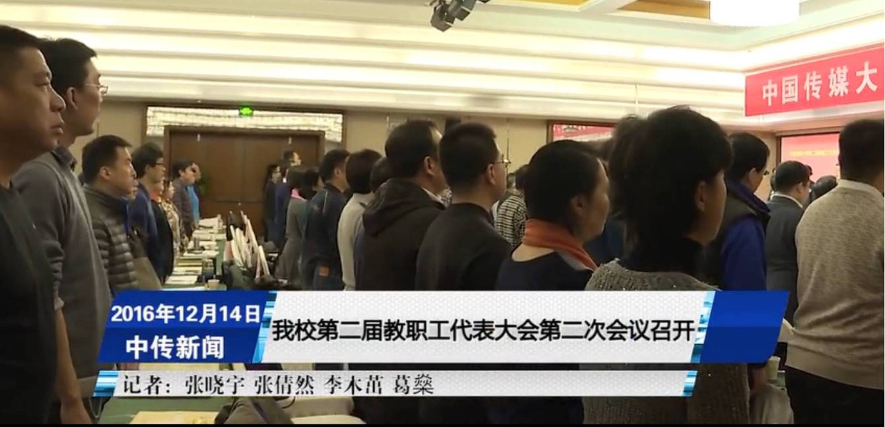
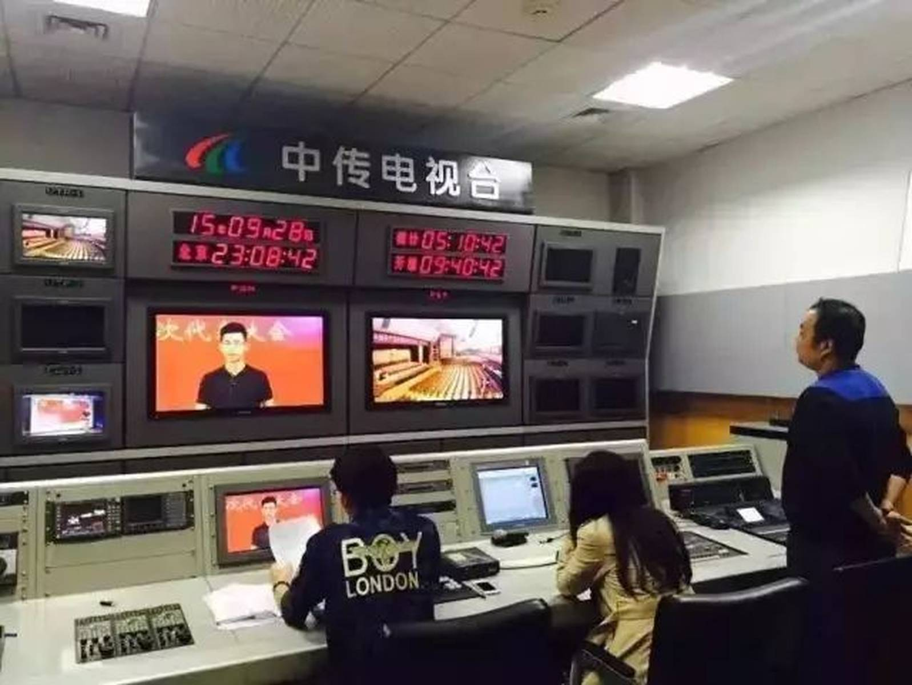
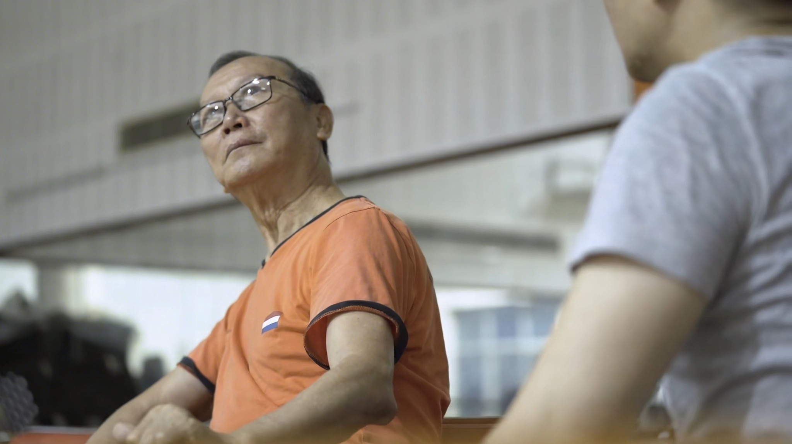

01 / Journalism
Campus News
Campus Television Production
As a producer-director for the campus news program at the Communication University of China, I led planning, shooting, production, and broadcast. The work trained me in deadline-sensitive visual reporting and in shaping information into a clear audiovisual structure.
Keyword: structure, timing, and visual clarity in reportage.